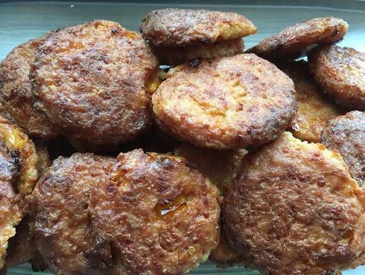

Quinoadeller
Home

Description
This is vegetarian meatballs made with quinoa and cheese.
Ingredients
- 200g quinoa
- 1 onion
- 100g parmesan (or other cheese)
- 2 tblsp oats
- 4 tblsp flour
- 4 eggs
- salt and pepper to taste
Instructions
- Boil quinoa.
- grate onion.
- Mix onion with oats, flour, quinoa, salt and pepper.
- Add the eggs one at a time.
- Add the cheese and stir well.
- Fry in butter until golden.